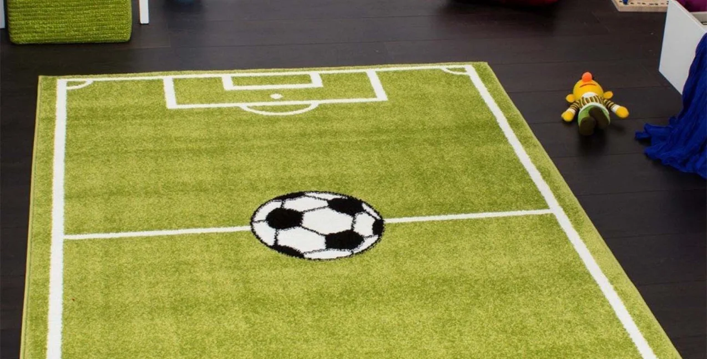
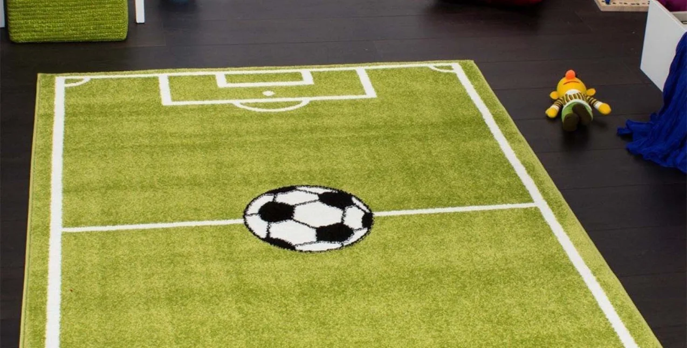

Почистим ваш ковер за 24 часа от любых загрязнений
За 100 грн/м² с помощью новых немецких технологий. Приедем через 2-3 часа. Скидка 3% при первой заказе
Заказать чистку
Чистка ковров по Киеву
и Киевской обл.
+380 99 999 99 99
Работаем с 8:00 до 18:00
За 100 грн/м² с помощью новых немецких технологий. Приедем через 2-3 часа. Скидка 3% при первой заказе
Заказать чисткуКовер - это место, где собираються вредоносные организмы и грибковые споры, которые могут причить различные заболевания, как например отдышка.
 

Мы работаем со 70 видами материалов и всеми видами загрязнений
Шерсть
Хлопок
Джут
Шёлк
Синтетика
Полиамит
Вискоза
Ворс
Полиэфир
Кровь
Моча
Кислоты
Вино
Кофе
Шоколад
Грязь
Жир
Воск

Мы приезжамем к вам и отвозим ваш ковер к себе на фабрику и там чистим с помощью проффесиональной оборудования. Самый эфективный способ.

Мастер приезжаем к вам и чистит ковер при вас. Менее эфективный способ.
В обоих вариантах вы не платите за доставку*
И для чистки на фабрике, и на дому
С вывозом
На дом

Пылесос высокого давления

Центрифуга
Пылесос высокого давления
Центрифуга
Пылесос высокого давления
Центрифуга
Пылесос высокого давления
Центрифуга
Всего несколько шагов к чистому ковру
С вывозом
На дом

Выбивание пыли

Сушка теплым воздухом

Мойка шампунем и выведение пятен

Поднятия ворса

Полоскание и отжим

Упаковка
Выбивание пыли
Сушка теплым воздухом
Мойка шампунем и выведение пятен
Поднятия ворса
Полоскание и отжим
Упаковка
Выбивание пыли
Мойка шампунем и выведение пятен
Полоскание и отжим
Сушка теплым воздухом
Поднятия ворса
Упаковка
Выбивание пыли
Мойка шампунем и выведение пятен
Полоскание и отжим
Сушка теплым воздухом
Поднятия ворса
Упаковка

Вернёте ли вы ковер обратно?
Ковер мы вам вернем через 24 часа после его принятия
Ковер не испортиться после чистки?
Мы используем моющие средства, которые подойдят всем видам ткани
Ваши средства не вызывают аллергию?
Мы используем только гипоалергенные средства
От чего зависит цена?
Цена зависит от материала ковра и степени загрязнения
Предложение работает ещё 3 дня
:
:
Часов
Минут
Секунд